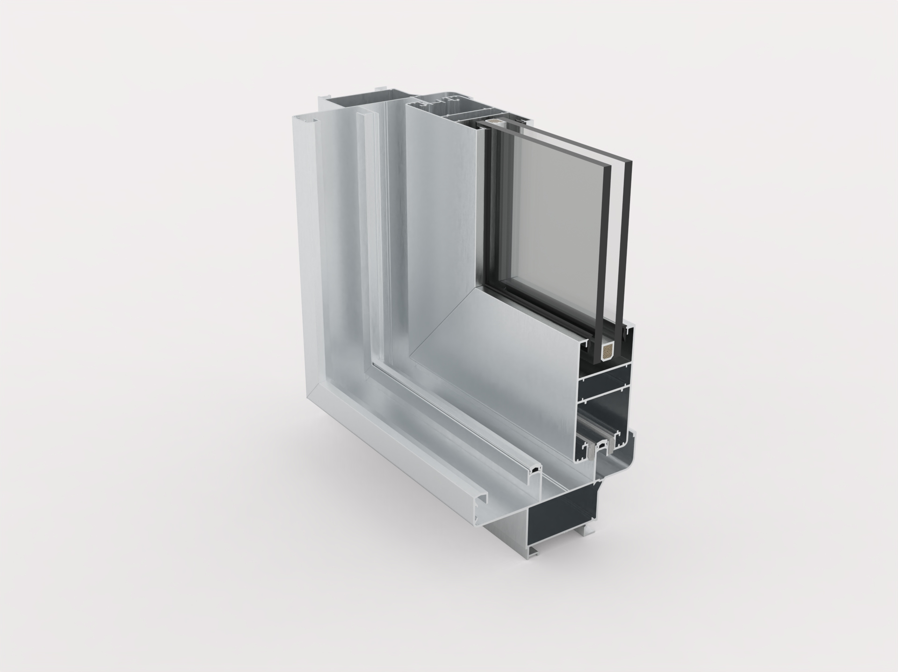

Nuestras Líneas de Aberturas
Línea Módena
Diseño clásico y resistente que combina elegancia con funcionalidad. Perfecta para proyectos residenciales y comerciales que buscan un equilibrio entre estética y durabilidad. Nuestra línea Módena ofrece una amplia gama de opciones de personalización, permitiendo adaptarse a diferentes estilos arquitectónicos y necesidades específicas de cada proyecto. Con más de 20 años de experiencia en el mercado, esta línea ha demostrado su excelencia en términos de aislamiento térmico, acústico y seguridad.
Características Técnicas
- Perfil de aluminio de alta resistencia
- Doble vidriado hermético (DVH)
- Sistema de cierre multipunto
- Juntas de estanqueidad perimetrales
Ventajas
- Excelente aislamiento térmico y acústico
- Máxima seguridad
- Diseño versátil
- Bajo mantenimiento
Galería de Imágenes

Línea HA110
Alta prestación, aislamiento térmico y acústico. Perfecta para grandes obras.
Características Técnicas
- Perfil de 110mm de espesor
- Triple vidriado hermético (TVH)
- Sistema de cierre de alta seguridad
- Juntas de estanqueidad reforzadas
Ventajas
- Máximo aislamiento térmico
- Protección acústica superior
- Alta resistencia a la intemperie
- Diseño premium
Galería de Imágenes
Línea PVC
En desarrollo: eficiencia energética, hermeticidad y diseño moderno.
Características Técnicas
- Perfil de PVC de alta calidad
- Doble vidriado hermético (DVH)
- Sistema de cierre multipunto
- Refuerzos de acero galvanizado
Ventajas
- Máxima eficiencia energética
- Excelente aislamiento acústico
- Mínimo mantenimiento
- Diseño contemporáneo
Galería de Imágenes
Línea Niza
Diseño elegante y funcional para proyectos residenciales.
Características Técnicas
- Perfil de aluminio de 70mm
- Doble vidriado hermético (DVH)
- Sistema de cierre multipunto
- Juntas de estanqueidad perimetrales
Ventajas
- Excelente relación calidad-precio
- Buen aislamiento térmico y acústico
- Diseño versátil
- Fácil mantenimiento
Galería de Imágenes
Línea Mediterránea
Diseño mediterráneo con máxima funcionalidad.
Características Técnicas
- Perfil de aluminio de 80mm
- Doble vidriado hermético (DVH)
- Sistema de cierre multipunto
- Juntas de estanqueidad reforzadas
Ventajas
- Estilo mediterráneo único
- Excelente aislamiento
- Alta durabilidad
- Diseño versátil